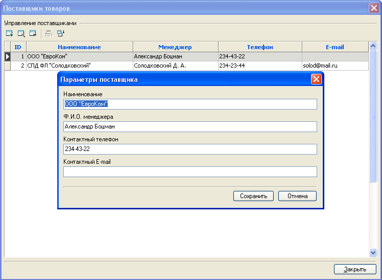

Справочник поставщиков товаров является необязательным для функционирования интернет-магазина, однако для крупного интернет-магазина с большим числом поставщиков он может оказаться очень полезен для составления отчетов по продажам, а также других аналитических отчетов, основывающихся на данных о прибыли. Подробнее об отчетах см. в Картотека заказов.

Для каждого поставщика можно указать дополнительные сведения: "Ф.И.О. менеджера", "Контактный телефон" и т.п., но главным полем является его наименования, а остальные поля храняться для общей справки.
После заполнения справочника поставщиков, необходимо для каждого товара указать его, а также сообщить ту цену по которой Вам поставляется данный товар - "Цена поставщика". Сделать это можно в карточке товара, кроме того, для автоматизации, эти данные могут быть заданны через автовычисления или импорт в текстовом формате.